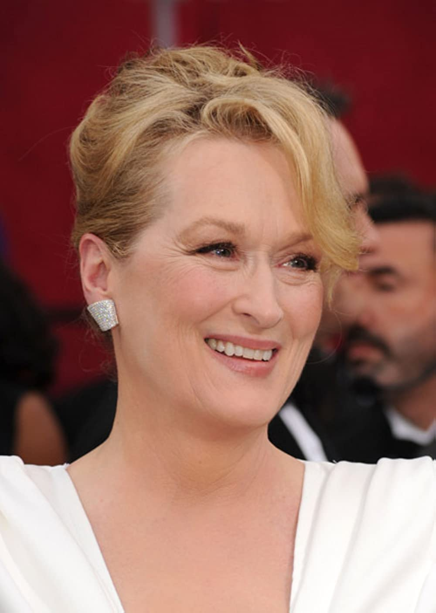

Verb: “Eu simt”; Element: Apa; Calitate: Cardinal; Energie: Yin;
Guvernator: Luna; Casa astrologică: Casa a IV-a; Zi: Luni; Culoare: Argintiu; Piatra prețioasă: Perla; Metal: Argint; Anatomie: Sâni, piept, uter, stomac;
Raci Celebri

TOM CRUISE

MERYL STREEP

TOM HANKS
Personalitate
Un familist convins, racul este o zodie încăpățânată, dar foarte motivată. O dată ce și-a setat un obiectiv, acesta luptă până îl duce la îndeplinire. Este loial, onest și foarte activ.
Profesii Potrivite
Le sunt potrivite profesiile legate de copii sau de maternitate. Dar și afacerile (comerțul) cu bunuri de larg consum, obiecte care se folosesc pentru întreținerea casei, bǎuturi (lichide în general). Pot fi atrași de istorie (profesori sau arhivari).